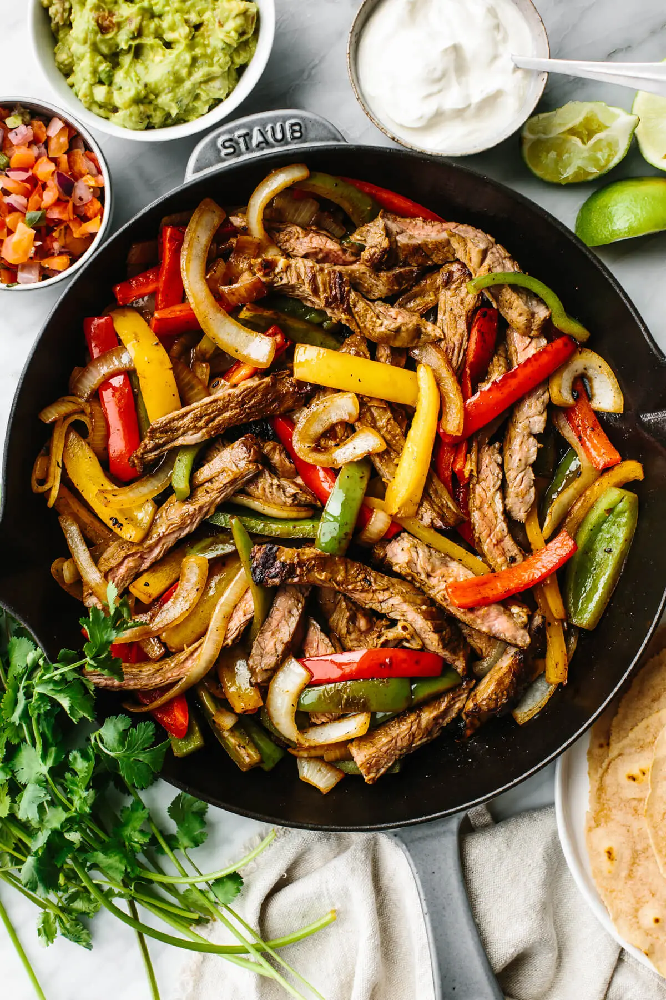

Fajitas are a Tex-Mex dish of grilled meat, usually beef or chicken, served in a skillet with grilled onions and peppers. The meat and vegetables are wrapped in a tortilla and can be customized with different flavor combinations. Fajitas are often served with warm tortillas, guacamole, sour cream, and salsa.
Chicken Fajitas
Fajita Seasoning
Other Recipes
